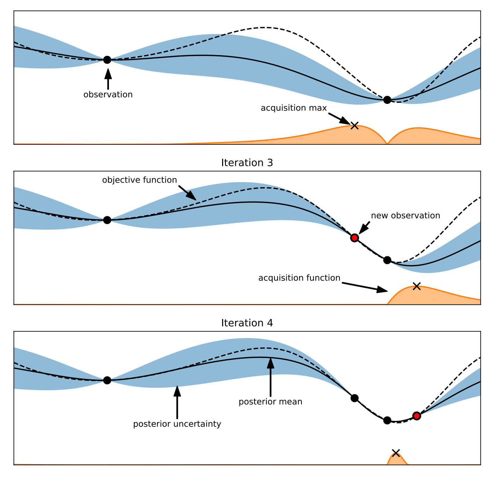

AutoML框架
参考1
[1].Automated machine learningwiki
简介
自动化机器学习( AutoML ) 是自动化将机器学习应用于现实世界问题的任务的过程。AutoML 可能包括从原始数据集开始到构建准备部署的机器学习模型的每个阶段。AutoML 被提议作为一种基于人工智能的解决方案，以应对应用机器学习日益严峻的挑战。AutoML 的高度自动化旨在允许非专家使用机器学习模型和技术，而无需他们成为机器学习专家。自动化端到端应用机器学习的过程还提供了产生更简单的解决方案、更快地创建这些解决方案以及通常优于手工设计模型的模型的优势。
与传统方法对比
在典型的机器学习应用程序中，从业者有一组输入数据点用于训练。原始数据可能不是所有算法都可以应用于它的形式。为了使数据适合机器学习，专家可能必须应用适当的数据预处理、特征工程、特征提取和特征选择方法。在这些步骤之后，从业者必须执行算法选择和超参数优化，以最大限度地提高模型的预测性能。这些步骤中的每一个都可能具有挑战性，从而导致使用机器学习的重大障碍。AutoML 旨在为非专家简化这些步骤。
AutoML步骤
- 数据准备和摄取（来自原始数据和其他格式）
- 数据类型检测：例如，布尔值、离散数值、连续数值或文本
- 数据特征作用检测；例如，目标/标签、分层字段、数字特征、分类文本特征或自由文本特征
- 任务检测；例如，二元分类、回归、聚类或排名
- 特征工程
- 特征选择
- 特征提取
- 元学习和迁移学习
- 检测和处理倾斜数据和缺失值
- 模型选择，选择使用哪种机器学习算法，通常包括多个竞争软件实现
- 模型集成，使用多个模型通常比任何单个模型提供更好的结果[
- 学习算法的超参数优化和特征化
- 时间、内存和复杂性约束下的管道选择
- 评估指标和验证程序的选择
- 问题检查
- 泄漏检测
- 错误配置检测
- 所得结果分析
- 创建用户界面和可视化
参考2
[2]. 走马观花AutoMLlink
背景
机器学习专家在构建机器学习模型的时候会根据自己的经验进行调整，如何让机器也学会这个过程，以缓解机器学习专家人才短缺问题，加速模型的迭代
超参数优化的优缺点
超参数优化是最早利用自动化技术来进行机器学习的领域，目前在市面上看到的大多数AutoML系统与产品都还主要集中在这个方面。
优点：
- 自动化的HPO技术对于降低机器学习的项目门槛，缓解数据科学人才短缺方面会有很大帮助
- 对于专业数据科学家，AutoML能够提高他们的工作效率，减少在手动调参方面的时间投入。对于平民数据科学家，或者说更擅长业务领域知识的数据分析人员，AutoML能帮助他们快速应用机器学习的能力，不需要再掌握机器学习的复杂技术细节，就能达到业界数据科学家的平均水平
- 很多之前没有机会应用机器学习的项目也开始可能出现正向的ROI回报，推动各行各业的AI应用落地
缺点：
- 模型评估一般都非常消耗计算资源，导致参数搜索优化的运行需要大量的时间和资源成本
- 算法pipeline的参数空间非常复杂，超参数维度高，相互依赖，且搜索空间本身都需要一定的经验来进行设计
- 自动HPO技术中很多也基于机器学习方法，本身的稳定性，泛化能力也是一大难点。
Model-Free Optimizer
- random search
- grid search
启发式算法
启发式的群体算法也经常被应用在HPO问题中，例如遗传算法，粒子群算法等。他们一般的思想是维护一个参数组合的群体，评估他们的fitness function（这里就是模型评估的表现），然后使用个体选择，变异，及相互交叉的做法，不断衍生出下一代整体表现更好的群体。这些方法过程较为简单，有一定并行性，收敛性也不错。但从实际效果来看可能需要较大量级的模型评估才能达到比较好的结果。
最著名的算法当属CMA-ES。其背后的思想是，根据群体中的优胜者们的分布，来更新均值和协方差，然后再进行下一轮的采样。当优胜者们距离比较远时，下一轮搜索采样的范围会扩大，而当优胜者们的分布比较集中时，下一轮的采样搜索范围会减小
在BBOB（Black-Box Optimization Benchmarking）挑战中，CMA-ES算法基本属于一个统治者的地位。
贝叶斯优化
贝叶斯优化的两个核心组件
- Surrogate model，我们希望能有一个模型学习到现在已知数据形成的分布情况，尤其是在已知点附近，我们对结果输出的信心会比较高，在没有被探索过的区域，我们对结果输出的分布会有很大的不确定性。
- 常用函数：高斯过程函数
- Acquisition function，利用模型输出的预测值及不确定性，我们希望平衡探索未知区域与利用已知区域信息，选择接下来的探索点。直观点说就是一方面想看看我没有尝试过的区域情况会如何，另一方面也不是完全瞎找，要综合我们的已知信息，比如我们尝试过学习率大于1的那些区域明显效果都比较差，应该在效果较好的0.01附近找更有可能的点。
常用函数：- EI(expected improvement)
- UCB(upper confidence bound)
- ES(entropy search)

图1 贝叶斯优化过程
通过高斯过程来拟合已有的observation，然后使用acquisition function来找到下一个评估点。